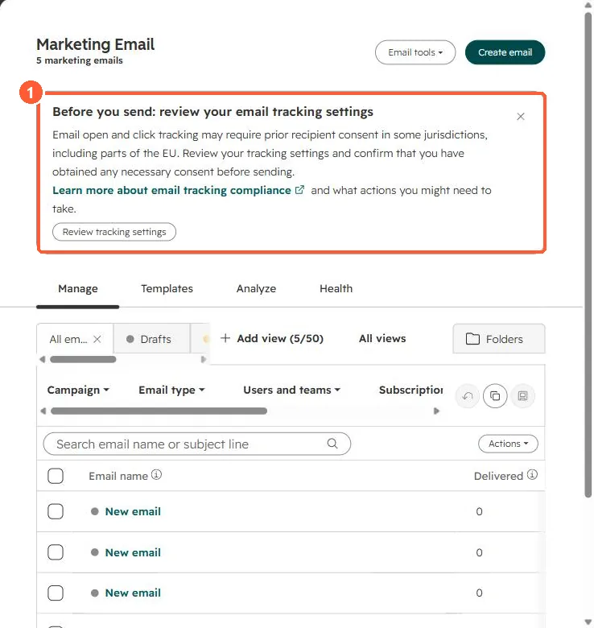

Short answer
HubSpot's KB: if your account is on sending probation, a banner appears at the top of the marketing email tool, and failing to fix the contact issues leads to a full suspension. High negative engagement on a send, such as bounces and spam reports, can trigger it. Clean out risky sources before appealing. HubSpot's cleanup guide lists the contact sources it wants removed.
1. Where the warning appears
Banners show at the top of the marketing email tool. My demo portal has none, only the tracking notice.


2. Cleanup
- Remove contacts from purchased or scraped lists.
- Suppress long-unengaged contacts. See unengaged contacts.
- Exclude hard bounces. See bounce types.